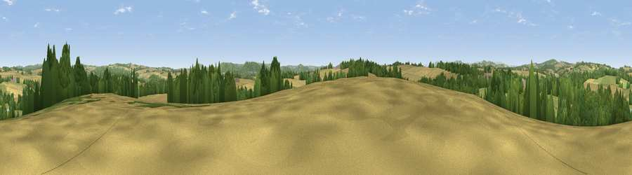

Viewpoint near Sellack
#24382 in England · top 56% of its area beats it · near SellackWhere it is
The exact computed spot (SO 56375 27225). Click the marker for map links.
The view, rendered

A 360° render of this exact spot computed from the terrain model, tree cover and land cover — summer colours, afternoon light, calibrated against photographs of famous viewpoints. Real trees, hedges and buildings will differ in detail.
The panorama
Grey silhouette: terrain skyline in each direction (720 bearings, Earth curvature and refraction included). Dashed green: skyline with trees (+15 m) and buildings (+8 m) as obstacles. Blue strip: how far the ground is visible on each bearing.
Where the view opens
Wedge length = distance to the farthest visible ground on that bearing (vegetation-aware). Rings at 10, 25 and 50 km.
What fills the view
46% cropland · 29% grassland · 23% woodland · 1% built-up
Angular shares of the visible panorama (visual magnitude), not map area. Landscape diversity 0.49 (0–1 Shannon).
Key numbers
More beautiful places nearby
The staircase of upgrades: each row has a higher view potential than everything closer. Driving times are estimates from straight-line distance, calibrated against real road routing — check an actual route before setting out.
| Place | Direction | Drive | Score |
|---|---|---|---|
| Viewpoint near Foy | ENE · 3 km | ~7 min | 48.0 |
| Viewpoint near Little Dewchurch | NNW · 5 km | ~12 min | 71.8 |
| Chase Wood Hill | SE · 6 km | ~13 min | 77.6 |
| Viewpoint near Orcop Hill | W · 9 km | ~17 min | 79.9 |
| Viewpoint near Woolhope | NE · 9 km | ~18 min | 80.7 |
| Viewpoint near Putley | NNE · 12 km | ~23 min | 80.9 |
| Viewpoint near Tarrington | NNE · 13 km | ~23 min | 81.4 |
| Seagar Hill | NNE · 13 km | ~23 min | 82.1 |
51.94181, -2.63603 · source: screening · position refined by local search. Computed location — check access rights before visiting.